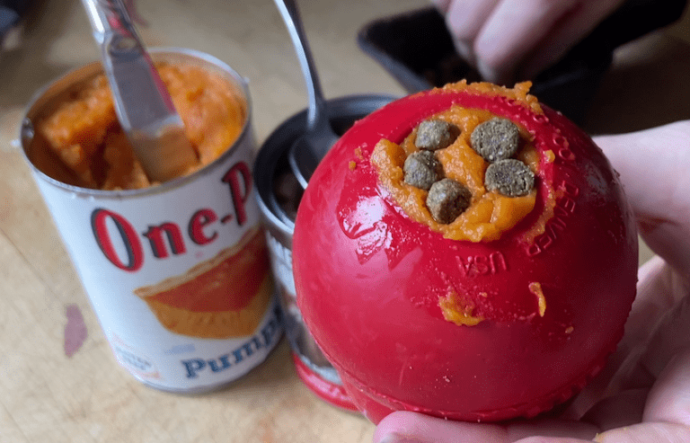

Sesame's Kong

Description
While unconventional to have as a recipe for a human recipe website, I thought it might be fun to add the recipe for my dog Sesame's favorite dinner, a stuffed kong! There are many ways that you can stuff a kong, but this is Sesame's favorite way.
Ingredients
- 90 grams of Purina Pro Sensitive Skin and Stomach Dog Food, Lamb and Oat
- 1/2 cup water
- 1 teaspoon pure pumpkin (note: please double check to make sure it is not pumpkin pie filling!)
- 1 baby carrot, diced (optional)
Steps
- Combine the dog food and water in a bowl. Let the dog food soak for at least 6 hours or until the majority of the dog food is soft and there is no more water in the bowl.
- Spoon the soaked dog food into the Kong, pressing down as you go. You may have to apply significant pressure to squeeze all of the dog food into the Kong. As you are spooning in the dog food, layer in some optional diced baby carrot.
- Spread the teaspoon of pumpkin over the top of the Kong.
- Place the completed Kong in a freezer for at least 24 hours before serving.